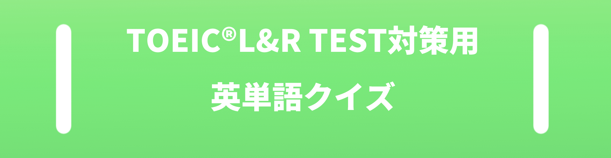
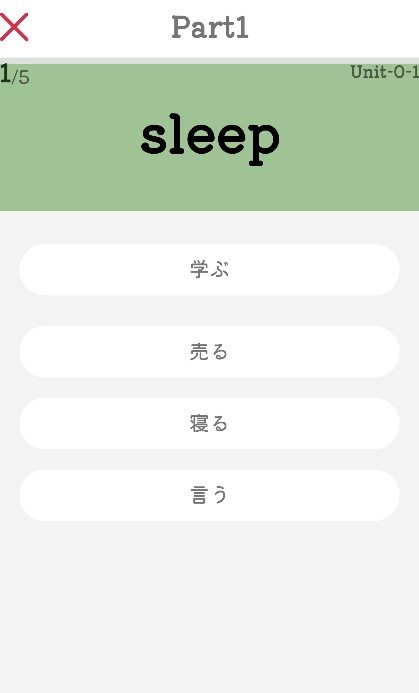
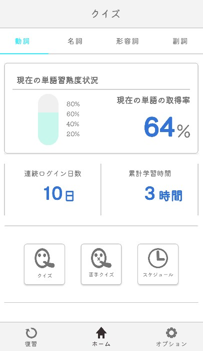
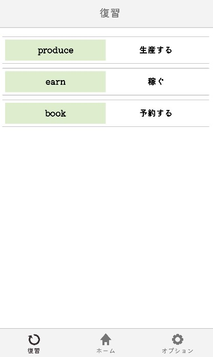

2023/4.07
TOEIC®L&R TEST用英単語クイズアプリをリリースしました。

プライバシーポリシーは下記のリンクから確認できます
Toiec対策に特化した英単語クイズアプリです。大幅の自分の英単語力をアップすることができます！ 対象者としてはやや中級者向けとなっております。
本アプリの特徴
本アプリの特徴は,隙間時間にできるだけ楽しみながら英単語を学習するためにクイズの出題方法に工夫をしました。 また、アニメーションに関してはオンオフを切り替えることが可能です。
それ以外にもモチベーションの維持のために、現在の単語の学習状況や単語ごとの学習時間などの記録が確認できるようになっています。
また、 復習リストで間違えた単語を復習できます。定期的に復習をすることをお勧めしますが、理想的なのは毎日です。溜まった単語リストはスワイプすることで削除できます。
今後も、バージョンアップを行い、機能の追加や削除をする予定です。実装予定としてはスケジュールの追加や苦手な単語だけにしぼったクイズなどが実装予定です。
ご意見、ご要望等あればお問い合わせページから記載されているメールアドレスにご連絡お願いします。